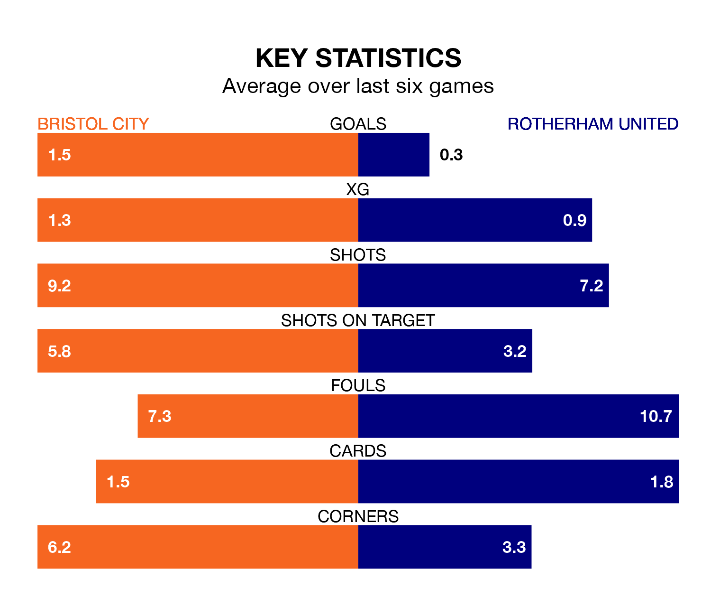

Bristol City are heavy favourites to keep all three points at home in Saturday's kick-off against Rotherham United.
The Robins, who sit 12th in EFL Championship with 44 games played, are priced at 1.3 to seal victory at Ashton Gate.
Sitting 12 places and 35 points behind them in the table, Rotherham are 7.3 to win with *Betting Company*, while the draw is at 4.5.
In the last 10 years, City and Rotherham have played each other on 11 occasions. City won five of them, Rotherham three, and they drew three times.
On average, the Robins scored 1.1 goals and the Millers 1.2 in those matches.
Their last meeting was on October 4, when City won 2-1 away.
City are in reasonable form in EFL Championship, with three wins and three draws from their last six games.
With a win and a draw over that period, Rotherham's form is much worse – they have taken four points from 18, compared to the Robins' 12.
With 32 goals in 44 games so far this season, United are the league's lowest scorers with 0.7 goals per game. And they are conceding more than average, letting in 85 goals at a rate of 1.9 per game.
The home side are also below average scorers, with 1.2 goals per game, compared to a league average of 1.3. They have conceded 1.1 goals per game.
City's last match was on April 20, a 1-1 draw against Norwich City, with Hayden Roberts getting the goal for the Robins.
Rotherham drew 0-0 with Birmingham City last time out, also on April 20.
Updated: 07:59 (UTC), 26/04/24